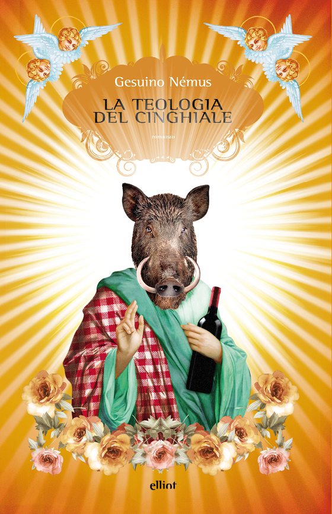

La Teologia del Cinghiale
(recensione di Clelia Attanasio)

Autore: Gesuino Némus
Editore: Elliot
Pagine: 240
Genere: Giallo
Anno pubblicazione: 2015
Ammetto il mio leggero ritardo per la consegna di questa recensione, ma questo libro ha richiesto tutta la mia attenzione e la mia concentrazione, e questi due giorni in più spesi per completare questo libro hanno davvero avuto il loro significato.
Il libro è un giallo, ambientato nella caldissima e antica Sardegna. Matteo Trudìnu e Gesuino Némus sono i due chierichetti di Don Cossu, gesuita e parroco del paese, con una straordinaria propensione nell’incappare nelle situazioni più disparate e nell’amare la caccia senza però mai riuscire a beccare un cinghiale.
Il tutto insieme al maresciallo De Stefani, proveniente dal “continente” (dal nord, insomma) e trapiantato in una terra accogliente ma straniera.
Gli amanti del genere rivedranno in queste parole un Don Matteo sardo, e li capisco, ma c’è tanto altro.
Mai trama fu più semplice, quindi: un giallo, la morte dei genitori del piccolo Matteo a pochi giorni di distanza l’uno dall’altro, la scomparsa di Matteo.
Ma la bellezza di questo libro non sta nella trama, non nell’intrigo in quanto tale; la bellezza di questo libro è nelle parole.
Perché?
Iniziamo dal principio, ché voglio spiegare cosa davvero ha significato per me questo libro e spero di accendere qualcosa anche nel vostro animo.
Questo libro custodisce tre parole chiave che per me sono significative come null’altro: Teologia, Pazzia e Delicatezza.
La prima è nel titolo, e per una studentessa di filosofia come me questa è una parola essenziale.
Qui la Teologia è, banalmente e all’inizio, il racconto di Don Cossu che cerca di appuntare sul suo quaderno come catturare un cinghiale che, però, sembra davvero inarrivabile.
Man mano il suo libricino diventerà il resoconto dettagliato di una lunghissima ricerca e di una serie di scoperte. Il cinghiale è l’imprevedibile, la teologia del cinghiale è la Rivelazione dell’imprevedibilità.
Amo questa parola, Teologia, che contiene in sé quel salto nel vuoto della fede e la sicurezza della filosofia.
Gesuino Némus non poteva fare una scelta più bella.
Poi la pazzia: sì, nel libro Gesuino-personaggio è il “pazzo” del villaggio, il povero ragazzo un po’ ritardato che non viene poi tanto preso sul serio, in fondo non si capisce molto bene cosa gli passi per la testa, sta sempre zitto e non sembra capire molto.
Gli manca un venerdì, in pratica. Voi non potete saperlo, ma anche questa parola ha un valore profondo per me, e vederla trattata così bene e così pienamente mi ha quasi commossa: c’è profondità nelle parole del personaggio Gesuino, c’è intensità nel descrivere la sua pazzia, e tanta saggezza nel descrivere ciò che un “bambino scemo” vede e recepisce attraverso i suoi occhi.
Mi ha toccato assistere alla crescita di questo ragazzino così profondo e sincero, e mi ha toccato accorgermi che anche per l’autore, così come credo io, la pazzia non sia altro che un linguaggio, non una diversità.
Infine, la delicatezza: non credo di dover spendere tante parole su questa parola (perdonatemi la cacofonia), perché da ciò che vi sto scrivendo si evince la grande delicatezza dell’autore nell’approcciarsi a certe tematiche.
In più, apprezzo tantissimo la scelta di Gesuino-autore di prendere il nome del più “debole” (Némus, in sardo, vuol dire Nessuno), ma sicuramente più forte, personaggio del romanzo e farlo suo (infatti l’autore si chiama Matteo Locci all’anagrafe).
La delicatezza nasce quando si trova un espediente semplice, come degli omicidi in un paesino sperduto della Sardegna, per parlare di vita vera, di sentimenti reali, di sensazioni e di persone che possono davvero esistere.
La delicatezza sta nel fare tutto questo e lasciare nel lettore un senso di arricchimento tale da sentirsi meglio con sé stesso e col mondo.
Quanto son contenta di aver letto questo libro, voi non potete immaginare.
Ovviamente lo consiglio a chiunque, agli amanti del giallo e agli amanti del romanzo di introspezione, a chi ama il romanzo psicologico.
C’è tutto in questo libro, almeno per me.
E mi scuso se sono stata prolissa questa volta, ma erano troppe le cose da dire, le considerazioni da fare.
È bello quando un libro ti lascia soddisfatta e appagata e arricchita e si ha voglia di raccontarlo al mondo.
Io ho solo la fortuna di poterlo fare davvero.
L'AUTORE - Matteo Locci ha 58 anni e viene da Jerzu, Sardegna. Esordisce nel 2015 con il suo primo romanzo, La Teologia del Cinghiale, vincendo il Premio Campiello Opera Prima e il Premio Bancarella. Il suo secondo lavoro è I bambini sardi non piangono mai, uscito nel 2016.